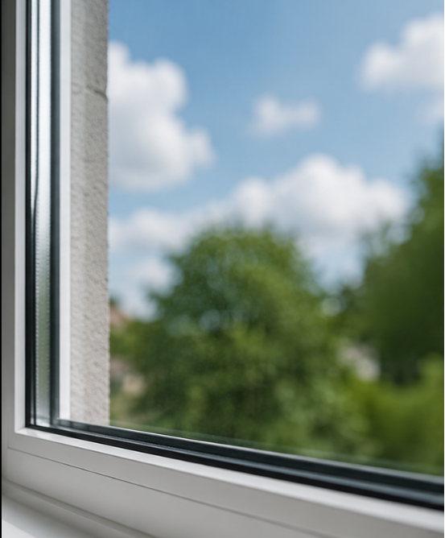

Was reinige ich alles?

Fensterglas
Einwaschen und Abziehen des Fensterglases auf beiden Seiten.

Rahmen/Falz/Bank
Reinigung des Fensterrahmens inklusive Fensterfalz und Fensterbank von beiden Seiten mit Mikrofasertüchern.

Sprossenfenster
Gründliches Reinigen auch bei Sprossenfenstern mit Mikrofasertüchern, sauber Scheibe für Scheibe inklusive der Sprossen selbst.

Dachfenster
Sorgfältige Reinigung auch bei gekippten Dachfenstern, solange sich diese so öffnen lassen, dass sich beide Seiten von innen reinigen lassen.

Glasflächen
Sauberes Einwaschen und Abziehen auch bei Schaufenstern, Wintergärten oder größeren Glasfronten (solange diese Flächen sicher und ohne den Einsatz von hohen Leitern erreichbar sind).

Weitere Leistungen ?
Zukünftig möchte ich mein Angebot außerdem um die Reinigung von Terrassen und Einfahrten mit dem Hochdruckreiniger erweitern.
Was kostet Ihre Fensterreinigung?
Preisrechner Fensterreinigung
Beantworten Sie ein paar kurze Fragen zu Ihren Fenstern und erhalten Sie sofort Ihren persönlichen Preis.
Zum PreisrechnerHäufige Fragen zur Reinigung
Warum sind die Preise so?+
Da ich meinen Service gerade erst aufbaue, biete ich meine Leistungen bewusst am unteren Rand des Marktpreises an. So kann ich mit jedem Auftrag mehr Erfahrung sammeln und meine Arbeit weiter verbessern.
Was wird entfernt?+
Übliche Verschmutzungen wie: Staub, Schmutz, Pollen und Ablagerungen.
Materialbedingte Verfärbungen oder Kratzer können durch eine normale Reinigung hingegen nicht beseitigt werden.
Was ist erreichbar?+
Fenster, die schwer zugestellt sind, müssen vorerst freigeräumt werden (z. B. das Abhängen von Gardinen oder Fliegengittern).
Fenster an sehr hohen Orten können nur gereinigt werden, solange sie mit einer kleinen Klappleiter und einer 2 Meter Teleskopstange erreichbar sind, ohne dass eine höhere Leiter zum Einsatz kommen muss.